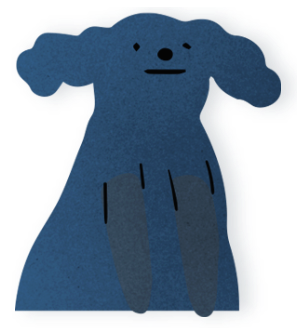

나에게 필요한!
CSS 속성 검색하기
- align-color 속성은 콘텐츠의 색상을 나타냅니다.
- align-content 속성은 콘텐츠의 상하관계 정렬 상태를 정의합니다.
- align-items 속성은 콘텐츠 내부의 정렬 상태를 정의합니다.
- align-self 속성은 콘텐츠의 정렬 상태를 정의합니다.
- all 속성은 요소의 속성을 초기화 또는 상속을 설정합니다.
- animation 속성은 애니메이션을 정의합니다.
- animation-delay 속성은 애니메이션 지연 시간을 설정합니다.
- animation-direction 속성은 애니메이션 움직임 방향을 설정합니다.
- animation-duration 속성은 애니메이션 움직임 시간을 설정합니다.
- animation-fill-mode 속성은 애니메이션이 끝난 후의 상태를 설정합니다.
- animation-iteration-count 속성은 애니메이션 반복 횟수 설정합니다.
- animation-name 속성은 애니메이션 keyframe 이름을 설정합니다.
- animation-play-state 속성은 애니메이션 진행상태를 설정합니다.
- animation-timing-function 속성은 애니메이션 움직임의 속도를 설정합니다.
- appearance(-moz-appearance, -webkit-appearance) 속성은 운영 체제의 테마를 기반으로 플랫폼에 기본 스타일을 사용하여 요소를 표시하는데 사용됩니다.
- aspect-ratio 속성은 자동으로 크기와 레이아웃이 다른 함수의 계산에 사용되는 상자를 설정합니다.
- backdrop-filter 속성은 배경에 그래픽 효과를 설정합니다.
- backface-visibility 속성은 요소의 뒷면을 설정합니다.
- background 속성은 백그라운드 속성을 일괄적으로 설정합니다.
- background-attachment 속성은 배경 이미지의 고정 여부를 설정합니다.
- background-blend-mode 속성은 배경을 혼합했을 때의 상태를 설정합니다.
- background-clip 속성은 백그라운드 이미지의 위치 기준점을 설정하기 위한 속성입니다.
- background-color 속성은 백그라운드 색을 설정합니다.
- background-image 속성은 백그라운드 이미지 및 배경 속성을 설정합니다.
- background-origin 속성은 백그라운드 이미지의 위치 기준점을 설정하기 위한 속성입니다.
- background-position 속성은 백그라운드 이미지의 위치 영역을 설정합니다.
- background-repeat 속성은 백그라운드 이미지 반복 여부를 설정합니다.
- background-size 속성은 백그라운드 이미지 사이즈를 설정합니다.
- border 속성은 테두리 속성을 일괄적으로 설정합니다.
- border-bottom 속성은 테두리 아래쪽 속성을 일괄적으로 설정합니다.
- border-bottom-color 속성은 테두리 아래쪽 색 속성을 설정합니다.
- border-bottom-left-radius 속성은 아래부분 왼쪽 모서리 굴곡을 설정합니다.
- border-bottom-right-radius 속성은 아래부분 오른쪽 모서리 굴곡을 설정합니다.
- border-bottom-style 속성은 테두리 아래쪽 스타일 속성을 설정합니다.
- border-bottom-width 속성은 테두리 아래쪽 두께 속성을 설정합니다.
- border-collapse 속성은 테이블의 테두리 분리 여부를 설정합니다.
- border-color 속성은 테두리 색 속성을 설정합니다.
- border-image 속성은 테두리 이미지 속성을 설정합니다.
- border-image-outset 속성은 테두리 이미지 간격 속성을 설정합니다.
- border-image-repeat 속성은 테두리 이미지 반복 속성을 설정합니다.
- border-image-slice 속성은 테두리 이미지 크기 속성을 설정합니다.
- border-image-source 속성은 테두리 이미지 경로 속성을 설정합니다.
- border-image-width 속성은 테두리 이미지 두께 속성을 설정합니다.
- border-left 속성은 테두리 왼쪽 속성을 일괄적으로 설정합니다.
- border-left-color 속성은 테두리 왼쪽 색 속성을 설정합니다.
- border-left-style 속성은 테두리 왼쪽 스타일 속성을 설정합니다.
- border-left-width 속성은 테두리 왼쪽 두께 속성을 설정합니다.
- border-radius 속성은 모서리 굴곡을 설정합니다.
- border-right 속성은 테두리 오른쪽 속성을 일괄적으로 설정합니다.
- border-right-color 속성은 테두리 오른쪽 색 속성을 설정합니다.
- border-right-style 속성은 테두리 오른쪽 스타일 속성을 설정합니다.
- border-right-width 속성은 테두리 오른쪽 두께 속성을 설정합니다.
- border-spacing 속성은 테이블의 테두리 간격을 설정합니다.
- border-style 속성은 테두리 스타일 속성을 설정합니다.
- border-top 속성은 테두리 위쪽 속성을 일괄적으로 설정합니다.
- border-top-color 속성은 테두리 위쪽 색 속성을 설정합니다.
- border-top-left-radius 속성은 윗부분 왼쪽 모서리 굴곡을 설정합니다.
- border-top-right-radius 속성은 윗부분 오른쪽 모서리 굴곡을 설정합니다.
- border-top-style 속성은 테두리 위쪽 스타일 속성을 설정합니다.
- border-top-width 속성은 테두리 위쪽 두께 속성을 설정합니다.
- border-width 속성은 테두리 두께 속성을 설정합니다.
- bottom 속성은 위치 요소의 아래쪽 속성을 설정합니다.
- box-decoration-break 속성은 컬럼 및 줄바꿈시 테두리와 패딩의 방식을 설정합니다.
- box-shadow 속성은 박스 요소의 그림자를 설정합니다.
- box-sizing 속성은 요소 크기에 패딩 포함 여부를 설정합니다.
- break-after 속성은 생성된 상자 이후 페이지, 열 또는 영역 구분의 작동방식을 설정합니다.
- break-before 속성은 생성된 상자 이전에 페이지, 열 또는 영역 구분의 작동방식을 절정합니다.
- break-inside 속성은 생성된 상자 내에서 페이지, 열 또는 영역 구분의 작동방식을 절정합니다.
- caption-side 속성은 caption의 위치를 설정합니다.
- caret-color 속성은 input의 커서 색을 정의합니다.
- clear 속성은 float 요소의 성질을 차단합니다.
- clip 속성은 보이는 영역을 설정합니다.
- color 속성은 글씨 색을 설정합니다.
- column-count 속성은 컬럼의 수를 정의합니다.
- column-fill 속성은 열의 지정방법을 정의합니다.
- column-gap 속성은 컬럼의 간격을 정의합니다.
- column-rule 속성은 컬럼 라인의 가로값, 스타일, 컬러를 정의합니다.
- column-rule-color 속성은 컬럼의 라인 색을 정의합니다.
- column-rule-style 속성은 컬럼 라인의 스타일을 정의합니다.
- column-rule-width 속성은 컬럼 라인의 가로값을 정의합니다.
- column-span 속성은 열의 속성을 정의합니다.
- column-width 속성은 컬럼의 가로 값을 정의합니다.
- columns 속성은 열의 폭과 열의 수를 정의합니다.
- contain 속성은 특정 요소가 문서 트리의 다른 부위와 독립되어있음을 나타낼 때 사용합니다.
- content 속성은 콘텐츠 내용을 설정합니다.
- content-visibility 속성은 요소가 내용을 렌더링하는지 여부를 제어하고 강력한 제약 조건 집합을 적용합니다.
- counter-increment 속성은 콘텐츠의 순서 상태를 정의합니다.
- counter-reset 속성은 콘텐츠의 숫자를 초기화합니다.
- counter-set 속성은 카운터를 지정된 값으로 설정합니다.
- cursor 속성은 마우스 오버시 마우스 포인터를 정의합니다.
- direction 속성은 문장의 방향을 설정합니다.
- display 속성은 요소의 성질을 정의합니다.
- empty-cells 속성은 테이블의 빈요소의 속성을 설정합니다.
- filter 속성은 그래픽 효과를 설정합니다.
- flex 속성은 콘텐츠의 성질을 flex로 정의합니다.
- flex-basis 속성은 요소의 기본 단위를 정의합니다.
- flex-direction 속성은 요소의 정렬 방향을 정의합니다.
- flex-flow 속성은 요소의 정렬 방향과 줄 속성을 설정합니다.
- flex-grow 속성은 요소의 크기를 숫자를 통해 정의합니다.
- flex-shrink 속성은 요소의 크기를 숫자를 통해 줄여줍니다.
- flex-wrap 속성은 요소의 줄 속성을 설정합니다.
- float 속성은 블록요소의 정렬 상태를 설정합니다.
- font 속성은 폰트에 관한 설정을 정의합니다.
- font-family 속성은 폰트 종류를 설정합니다.
- font-feature-settings 글꼴의 고급 타이포그래픽 기능을 설정합니다.
- font-kerning 글꼴에 저장된 커닝 정보의 사용을 설정합니다.
- font-language-override 속성은 서체의 언어별 글리프 사용을 설정합니다.
- font-optical-sizing 속성은 텍스트 렌더링이 다른 크기로 볼 수 있도록 최적화되었는지 여부를 설정합니다.
- font-size-adjust
- font-size 속성은 폰트 사이즈 속성을 설정합니다.
- font-size-adjust 속성은 소문자를 기준으로 폰트 크기를 설정합니다.
- font-stretch 속성은 폰트의 굵기를 정의합니다.
- font-style 속성은 폰트의 스타일을 정의합니다.
- font-synthesis 속성은 브라우저에서 굵게 또는 기울임꼴로 합성할 수 있는 서체를 설정합니다.
- font-variant 속성은 글꼴의 변형을 정의합니다.
- font-variant-alternates 속성은 대체 글리프의 사용을 제어합니다.
- font-variant-caps 속성은 대문자의 대체 글리프 사용을 제어합니다.
- font-variant-east-asian 일본어 및 중국어처럼 동아시아 스크립트에 대체 글리프를 사용하는 것을 제어합니다.
- font-variant-ligatures 속성은 적용되는 요소의 텍스트 내용에 사용되는 연결 및 상황별 형식을 제어합니다.
- font-variant-numeric 속성은 숫자, 분수 및 순서 표시자에 대한 대체 글리프 사용을 제어합니다.
- font-variant-position 속성은 대첨자 또는 첨자로 배치된 대체 작은 글리프의 사용을 제어합니다.
- font-variation-settings 속성은 변경할 특성의 문자 축 이름 네 개와 해당 값을 지정하여 변수 글꼴 특성에 대한 낮은 수준의 제어를합니다.
- font-weight 속성은 폰트의 두께를 정의합니다.
- forced-color-adjust 속성을 사용하여 특정 요소를 강제 색상 모드에서 제외하고 CSS로 복구시킵니다.
- grid 속성은 가로 컬럼의 크기와 위치 설정합니다.
- grid-area 속성은 그리드의 크기와 위치 영역 모서리를 설정합니다.
- grid-auto-columns 속성은 암시적으로 작성된 그리드 열 트랙의 크기 또는 트랙 패턴을 지정합니다.
- grid-auto-flow 속성은 자동 배치 알고리즘의 작동 방식을 제어하여 자동 배치 항목이 그리드로 유입되는 정확한 방법을 지정합니다.
- grid-auto-rows 속성은 암시적으로 작성된 그리드 행 트랙의 크기 또는 트랙 패턴을 지정합니다.
- grid-column 속성은 grid-column-start와 grid-column-end 속성을 같이 사용합니다.
- grid-column-end 속성은 그리드 열의 끝 위치를 지정하여 영역 블록 끝 모서리를 지정합니다.
- grid-column-gap 속성은
- grid-column-start 속성은
- grid-gap 속성은 grid-row-gap와 grid-column-gap 속성을 같이 사용합니다.
- grid-row 속성은 grid-row-start와 grid-row-end 속성을 같이 사용합니다.
- grid-row-end 속성은 그리드 행 내부와 영역라인 끝 모서리를 지정합니다.
- grid-row-gap 속성은 그리드 행 사이의 간격을 정합니다.
- grid-row-start 속성은 그리드 행 내부의 시작 위치와 영역 인라인 시작 위치를 지정합니다.
- grid-template 그리드 열, 행 및 영역을 정의하기 위한 속기 속성입니다.
- grid-template-areas 속성은 아이템의 위치를 설정합니다.
- grid-template-columns 속성은 그리드 열의 선 이름과 트랙 크기 조정 함수를 정의합니다.
- grid-template-rows 속성은 그리드 행의 크기 조정 기능을 설정합니다.
- hanging-punctuation 속성은 글씨의 시작 및 끝의 위치 정의합니다.
- height 속성은 콘텐츠 요소의 세로값을 설정합니다.
- hyphens 속성은 텍스트의 하이픈 영역을 설정합니다.
- image-rendering 이미지 스케일링 알고리즘을 설정합니다.
- inline-size 속성은 요소 블록의 쓰기 모드에 따라 수평 또는 수직 크기를 정의합니다.
- isolation 속성은 stacking context을 설정합니다.
- justify-content 속성은 콘텐츠의 좌우 관계 정렬 상태를 정의합니다.
- justify-items 속성은 상자의 모든 항목에 justify-self 정의하여 적절한 축을 따라 각 상자를 정렬합니다.
- justify-self 속성은 적절한 축을 따라 정렬 컨테이너 내부에서 상자를 정렬하는 방식을 설정합니다.
- left 속성은 위치 요소의 왼쪽 속성을 설정합니다.
- letter-spacing 속성은 글자 사이의 간격을 설정합니다.
- line-break 속성은 구두점 및 기호 작업 시 중국어, 일본어 또는 한국어(CJK) 텍스트의 줄을 끊는 방법을 설정합니다.
- line-height 속성은 문장과 문장 사이의 간격을 설정합니다.
- line-height-step 속성은 상자 높이에 대한 계단 단위를 설정합니다.높이가 단위에서 가장 가까운 배수까지 반올림됩니다.
- list-style 속성은 목록 스타일 속성을 설정합니다.
- list-style-image 속성은 목록 마커의 이미지를 설정합니다.
- list-style-position 속성은 목록 마커의 위치 속성을 설정합니다.
- list-style-type 속성은 목록 마커의 유형을 설정합니다.
- margin 속성은 요소의 바같쪽 여백을 설정합니다.
- margin-bottom 속성은 요소의 아래 바같쪽 여백을 설정합니다.
- margin-left 속성은 요소의 왼쪽 바같쪽 여백을 설정합니다.
- margin-right 속성은 요소의 오른쪽 바같쪽 여백을 설정합니다.
- margin-top 속성은 요소의 위부분 바같쪽 여백을 설정합니다.
- max-height 속성은 요소의 최대 세로값을 설정합니다.
- max-width 속성은 요소의 최대 가로 값을 설정합니다.
- min-height 속성은 요소의 최소 세로 값을 설정합니다.
- min-width 속성은 요소의 최소 가로 값을 설정합니다.
- mix-blend-mode 속성은 배경의 혼합 상태를 정의합니다.
- mask 속성은 특정 지점에서 이미지를 마스킹하거나 클리핑하여 요소(부분 또는 전체)를 숨깁니다.
- mask-border 속성을 사용하여 요소의 테두리를 따라 마스크를 만들 수 있습니다.
- mask-type 속성은 SVG <마스크> 요소를 휘도 또는 알파 마스크로 사용할지 여부를 설정합니다. [마스크] 요소 자체에 적용됩니다.
- object-fit 속성은 <img>, <video> 태그의 크기를 정의합니다.
- object-position 속성은 <img>, <video> 태그의 위치를 정의합니다.
- opacity 속성은 요소의 투명도를 설정합니다.
- order 속성은 flex 콘텐츠의 순서를 정의합니다.
- orphans 속성은 페이지, 영역 또는 열의 맨 아래에 표시해야 하는 블록 컨테이너의 최소 행 수를 설정합니다.
- outline 속성은 모든 아웃라인 속성을 단일 선언으로 설정합니다.
- outline-color 속성은 아웃라인의 색을 정의합니다.
- outline-offset 속성은 아웃라인의 간격을 정의합니다.
- outline-style 속성은 아웃라인 스타일을 정의합니다.
- outline-width 속성은 아웃라인의 두께를 정의합니다.
- overflow 속성은 지정한 영역에 요소들이 벗어났을 때 속성을 설정합니다.
- overflow-anchor 속성은 스크롤 위치를 조정하여 콘텐츠 이동을 최소화하는 브라우저의 스크롤 고정 동작을 해제할 수 있는 방법을 제공합니다.
- overflow-block 속성은 상자의 블록 시작 및 블록 끝 모서리에 오버플로되는 내용을 설정합니다.
- overflow-clip-margin 속성은 오버플로우가 있는 요소의 범위를 얼마나 벗어나는지 결정합니다.
- overflow-inline 속성은 내용이 상자의 인라인 시작 및 끝 모서리에 오버플로될 때 표시되는 항목을 설정합니다.
- overflow-wrap 속성은 인라인 요소에 적용되며, 브라우저가 줄 바꿈이 불가능한 문자열 내에 줄 바꿈을 삽입하여 텍스트가 줄 상자에 넘치지 않도록 해야 하는지 여부를 설정합니다.
- overflow-x 속성은 X축을 기준으로 지정한 영역에 요소들이 벗어났을 때 속성을 설정합니다.
- overflow-y 속성은 Y축을 기준으로 지정한 영역에 요소들이 벗어났을 때 속성을 설정합니다.
- overscroll-behavior 속성은 스크롤 영역의 경계에 도달할 때 브라우저가 수행하는 작업을 설정합니다.
- overscroll-behavior-block 속성은 스크롤 영역의 블록 방향 경계에 도달했을 때 브라우저의 동작을 설정합니다.
- overscroll-behavior-inline 속성은 스크롤 영역의 인라인 방향 경계에 도달했을 때 브라우저의 동작을 설정합니다.
- overscroll-behavior-x 속성은 스크롤 영역의 수평 경계에 도달했을 때 브라우저의 동작을 설정합니다.
- overscroll-behavior-Y 속성은 스크롤 영역의 수직 경계에 도달했을 때 브라우저의 동작을 설정합니다.
- padding 속성은 요소의 안쪽 여백을 설정합니다.
- padding-bottom 속성은 요소의 아래쪽 여백을 설정합니다.
- padding-left 속성은 요소의 왼쪽 여백을 설정합니다.
- padding-right 속성은 요소의 오른쪽 여백을 설정합니다.
- padding-top 속성은 요소의 위쪽 여백을 설정합니다.
- page-break-after 속성은 페이지 인쇄시 분리에 관한 설정을 정의합니다.
- page-break-before 속성은 인쇄시 페이지 분리에 관한 설정을 정의합니다.
- page-break-inside 속성은 인쇄시 페이지 분리에 관한 설정을 정의합니다.
- perspective 속성은 3D를 표현할 때 원근점을 정의합니다.
- perspective-origin 속성은 3D를 표현할 때 원근점의 방향을 정의합니다.
- pointer-events 속성은 포인터 이벤트 반응을 정의합니다.
- position 속성은 요소의 위치를 설정합니다.
- <q> 태그는 짧은 글을 인용할 때 사용합니다.
- <rp< 태그는 루비 태그가 지원되지 않을 경우 괄호('(')를 표현해주는 역할을 합니다.
- <rt> 태그는 상단에 작은 주석 글씨를 나타냅니다.
- <rtc> 태그는 텍스트 컨테이너 역할을 합니다.
- <ruby> 태그는 루비 문자를 정의합니다.
- <s> 요소는 텍스트에 취소선을 나타냅니다. .
- <samp> 태그는 컴퓨터 프로그램으로 출력된 결과물을 나타내는 텍스트를 표현합니다.
- <script> 태그는 실행 가능한 스크립트 코드를 포함하거나 외부 스크립트를 연결할 수 있습니다.
- <section> 태그는 주제별 그룹의 콘텐츠 섹션을 나타낼 때 사용하며, 각 섹션에는 <h1>~<h6> 요소를 자식으로 포함시켜 식별해야 합니다.
- <select> 태그는 선택 목록을 설정합니다.
- <small> 태그는 저작권 및 법적인 텍스트에 설정합니다.
- <source> 태그는 <picture>, <audio> 요소 및 <video 요소에 소스를 지정하는데 사용합니다. 닫는 태그가 없는 빈요소입니다.

